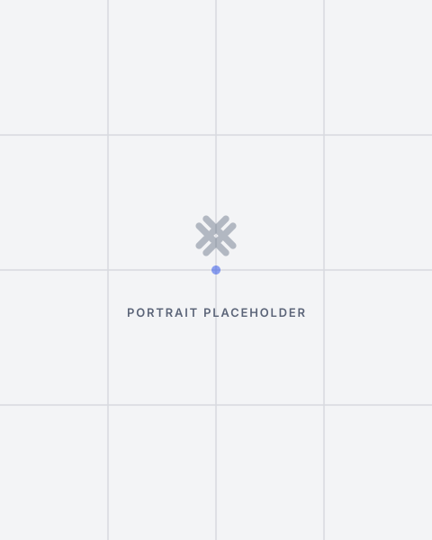

Peer Circles
Curated, candid and confidential.
Facilitated by, and for, experienced women designing and developing more self-directed professional lives.
The Lattice is a national community for senior women leaders ready to work differently.
Founding peer circles launch September 2026 Membership opens January 2027
The Lattice centres on two pillars:
Curated, candid and confidential.
Facilitated by, and for, experienced women designing and developing more self-directed professional lives.
Online community and expert guests.
On portfolio design, board pathways, advisory work, fractional roles, positioning, pricing, visibility, and risk.
Community comes first. Everything else is built on top of it.
Senior women are building advisory practices, expanding board work, launching companies, taking fractional roles, and assembling portfolios that reflect the full range of what they know.
The Lattice connects them. A vetted community of experienced women leaders who learn from one another, refer and amplify each other, and maximise our collective impact through the network.
Facilitated, confidential conversations with experienced women navigating the same transitions you are. In a room where the thinking matches yours
Apply for a Peer CircleOnline peer community with monthly expert conversations. Your whole self welcomed—honest, unfiltered, real.
Get on the listA vetted network for what comes next. Peer connection that generates referrals. Visibility that matters. Access to the relationships that open doors.
Get Early AccessThe Lattice is for senior women leaders with more than 2 decades of executive, founder, board, professional services, public sector, or institutional leadership experience who are:

What connects us: A deliberate choice to work on our own terms and to build whatever comes next.
A network of accomplished Canadian women—vetted, active, directly available for board, advisory, and strategic roles.
If a peer circle, monthly conversations, or Lattice membership sounds right for you, we'd like to hear from you.
We're not building the largest room. We're building the most useful one for your next chapter.